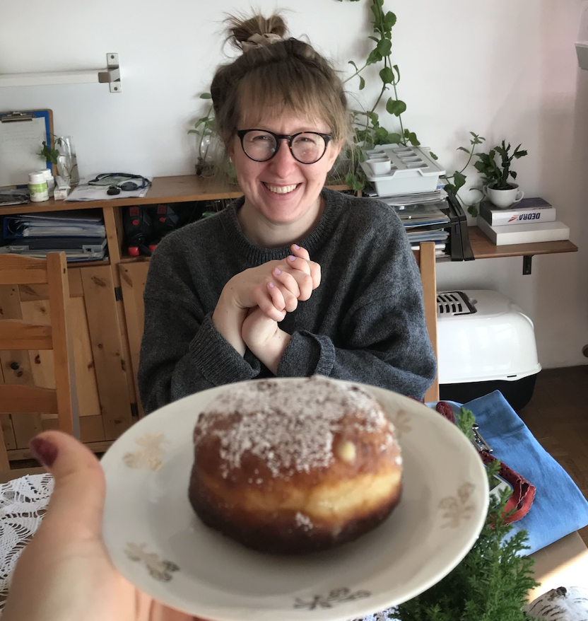

MSc Marta Łoskot
Junior Frontend Developer (React, TypeScript, Node.js)
Detail-oriented Frontend Developer with a strong analytical and structural
background (MSc in Civil Engineering from Silesian University of Technology). I specialize
in building responsive user interfaces using React, JavaScript (ES6+), and
SCSS, with a growing proficiency in TypeScript. I combine an
engineering, problem-solving mindset with a passion for creating clean, user-centric web
applications that simplify daily life.
I actively develop personal projects and share them on GitHub:
github.com/tusia313

| 2026 – present |
Advanced JavaScript, React & TypeScript development
www.ui.dev |
| 2023/12 – 2025/12 |
Frontend Development Course (React) including backend fundamentals (Node.js, Express, PostgreSQL), codewithania.com Course completed, hands-on projects; confirmed by certificate |
| Travel App |
Full-stack travel web application with interactive maps
|
| Full-Stack To-Do |
Task management system with advanced authorization
Projects available on GitHub: github.com/tusia313 |
experience |
|
|---|---|
| 2024/02 – 2024/06 |
Modulo2dev | Katowice, PL Junior Frontend Developer Intern
|
| 2020/02 – 2021/10 |
Trakt sp. z o.o sk. | Katowice, PL Assistant Road Designer
|
| 2019/03 – 2019/12 |
Regional Roads Authority | Katowice, PL Administration Assistant
|
| 2016/07 – 2016/11 |
TIM Invest | Katowice, PL Project Assistant
|
| location | Katowice/Żywiec, Poland |
| loskotmarta@gmail.com | |
| phone | (+48) 503 933 861 |
| GitHub | https://github.com/tusia313 |
technical skills
Frontend
- HTML5, CSS3, SASS/SCSS (layout-focused)
- JavaScript (ES6+) & TypeScript (essential core)
- React (components, hooks, state management)
- Asynchronous JS (fetch, async/await, Axios)
- HTTP, Cookies & REST APIs
Backend & Database
- Node.js, Express.js
- Authentication (JWT, session cookies, bcrypt)
- PostgreSQL & SQL (relational database CRUD)
Tools & Methodologies
- Git, GitHub, npm, Vite
- Figma
AI-Assisted Development
- Gemini (efficient prototyping & optimization)
Education
2017 – 2018: Civil Engineering, Master (Erasmus; Writing master thesis there), University of Cassino and Southern Lazio, IT
2017 – 2018: Civil Engineering, Master, Silesian University of Technology, Gliwice, PL
2014 – 2017: Civil Engineering, Bachelor, Silesian University of Technology, Gliwice, PL
additional experience
2025: Digital Content & Web Administrator (freelance/community) – managing WordPress site content, promotional announcements, and digital asset galleries.
2016 – 2022: Volunteer at Community Center of St. Wojciech in Katowice and at Home and Peace Foundation in Jerusalem, IL
2016 – 2019: Monument conservation at student research club "Szczeblina", Gliwice, PL
Summer 2018: Corporal / Non-commissioned officer, National Polish Army, Wrocław, PL